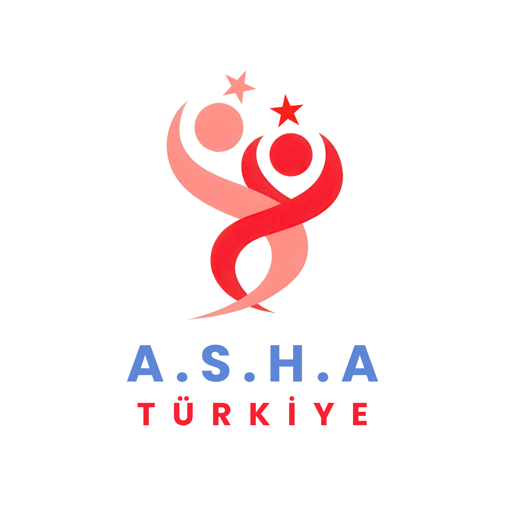

Make the invisible visible
We share clear, age-appropriate information about human trafficking, online risks, recruitment tactics, and prevention.

PROJECT A.S.H.A.Türkiye chapterA youth-led movement in Türkiye
Project A.S.H.A. Türkiye empowers young people to recognise the risks of human trafficking, look out for one another, and turn knowledge into action.
Knowledge is a form of protection. We make it easier to find, share, and use.
We create the conversations, tools, and connections that help young people move through the world with more confidence.
We share clear, age-appropriate information about human trafficking, online risks, recruitment tactics, and prevention.
We partner with schools and advocacy organisations to bring educational workshops and honest conversations to young people across Türkiye.
Our digital media channels turn complex issues into regular, approachable content about safety for women and children too.
There is a place for you here